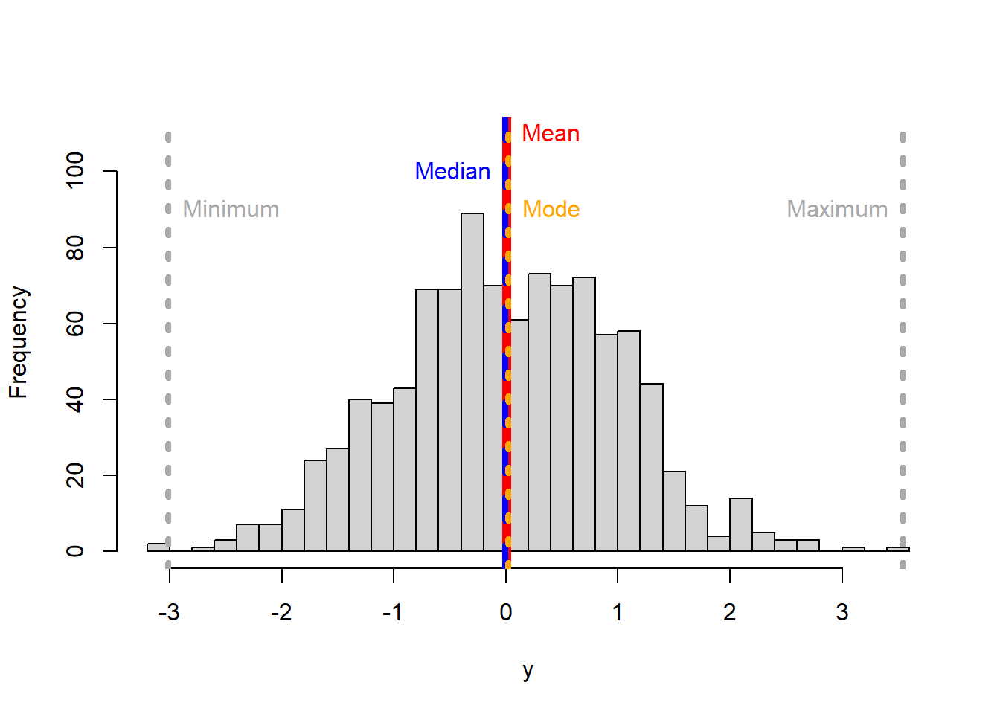
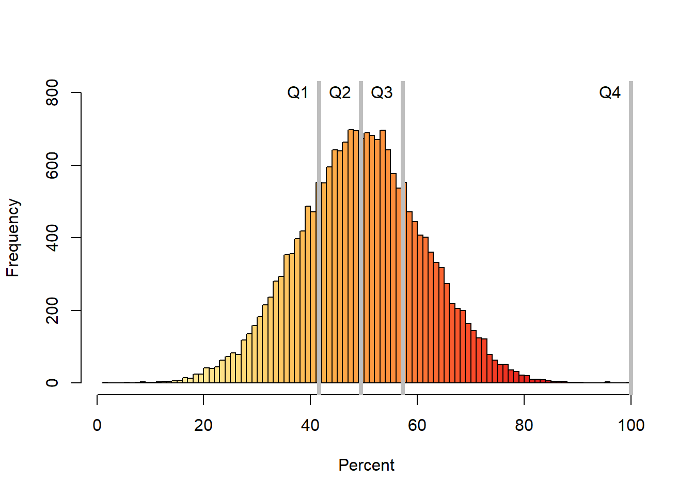
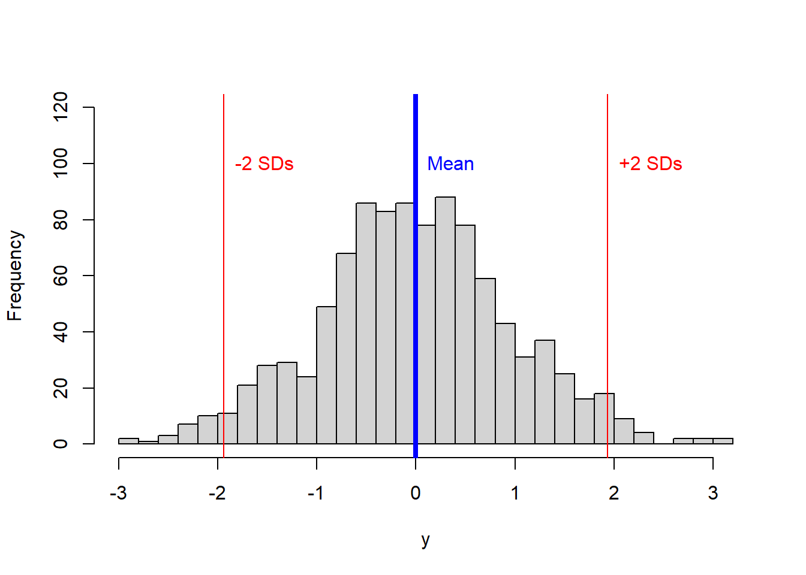

Dispersion
Dispersion refers to describing the spread of your data. And there are different metrics that may help you describe the variability in your data.
The minimum and the maximum
The most basic metrics of the data dispersion are the minimum and the maximum. As their names indicate they are the lowest and the highest values in your data.
In R, the minimum and maximum are calculated with the function min and max, respectively.
Let’s plot them:
hist(y, main = NULL,breaks = 30, ylim=c(0,110),)
#lets plot the mean
abline(v=MEAN, col="red",lwd=6)
text("Mean",x=MEAN,y=110, col="red",pos=4)
# now the median
abline(v=MEDIAN, col="blue",lwd=4, lty=2) #I plot the median in blue to distinguish from the mean
text("Median",x=MEDIAN,y=100, col="blue", pos=2)
#now let's plot the mode
abline(v=MODE, col="orange",lwd=4, lty=3) #I plot the median in blue to distinguish from the mean
text("Mode",x=MODE,y=90, col="orange", pos=4)
#now let's plot the minimum
MINIMUM=min(y)
abline(v=MINIMUM, col="dark grey",lwd=4, lty=3) #I plot the median in blue to distinguish from the mean
text("Minimum",x=MINIMUM,y=90, col="dark grey", pos=4)
#now let's plot the maximum
MAXIMUM=max(y)
abline(v=MAXIMUM, col="dark grey",lwd=4, lty=3) #I plot the median in blue to distinguish from the mean
text("Maximum",x=MAXIMUM,y=90, col="dark grey", pos=2) 
The range
Another simple metric to describe the dispersion in your data is called the range.u The range is the difference between the smallest and the largest number in your data. Of course, within the range everything is possible, so while descriptive and useful in many situations, it is not always the best indicator of inference.
Figure 5.7: The effect of the range
The percentile
A percentile indicates the percentage of values that are smaller than the given value.
For example, if you score 75 points on a test, and are ranked in the 85th percentile, it means that 85% of students that took that exam did worse than you. The way to report it is like this: “the 85th percentile was 75 points”.
How is the percentile calculated?. Simple,
Rank the values in your database from smallest to largest, we called this the sorted vector.
Multiply the number of values in your database by the given percentile you want to find as a fraction (If you want the 90th percentile, the fraction is 0.9), we call this resulting number the index or \(Xth\) point
Now go back to your sorted vector, starting from the first number in that vector move to the right until the value located at the Xth point. The value located at the Xth point is your given percentile.
Lets do an example,
Take my population of ten rabbits below, and say I want to know the 80th percentile height of my rabbits?

Figure 5.8: My rabbit population
Because I am interested in height, I measure their heights. Say they were 37, 15, 35, 36, 5, 40, 41, 68, 45, and 56cm (I am making these numbers up, so do not overthink the size of my rabbits).
I sort my rabbits by height. Say their sorted heights are 5, 15, 35, 36, 37, 40, 41, 45, 56 and 68cm.
Figure 5.9: My rabbits sorted by height
Next, I multiply the percentile of interest (80th) as a fraction (i.e., 0.8) by the number of rabbits (10). So the 80th percentile height is the height of whatever rabbit is sitting in 8th position. In this case the number is 45. So the 80th percentile of my rabbit population is 45cm.

Figure 5.10: The 80th percentile
In R, the percentile value in an vector of values is calculated with the function quantile. Basically, you need to enter the array of values, and the quantile you need (as a fraction).
Lets take the height of my rabbits above.
MyRabbits=c(37, 15, 35, 36, 5, 40, 41, 68, 45, 56) #vector of rabbit height, it does no
quantile(MyRabbits, .8,type = 1) # the type parameter allows you to use different ways to approximate the value. check ?quantile for more details## 80%
## 45The quantile
The quantiles are specific percentiles that divide the data in equal amounts. Quantiles can take different names. For instance, quartiles break the data in four groups, deciles in ten groups, and percentiles in 100 groups.
Lets take the quartile example. In this case, the data needs to be broken in four groups, so the breaking points will be 0.25, 0.5, and 0.75. Those break points will create four different categories in which I can group my data (0 to 0.25], (0.25 to 0.5], (0.5 to 0.75] and (0.75, 1]. They can also be called the 1st quartile, 2nd quartile, 3rd quartile and 4th quartile. You can see those indexes at times being called Q1, Q2, Q3, and Q4.
Lets display the quartiles for a normal distribution.
library (RColorBrewer)
library(dplyr)
library(scales)
set.seed(3)
dt <- data.frame(x=rbeta(20000,100,100)*20000) #Lets create some dummy normal data
dt$x <- rescale(dt$x,to = c(1, 100), from = range(dt$x)) #I rescale the data from 1 to 100 to better visualize the percentage results
dt=dt %>% arrange(x) #Sort values from smallest to largest
dt$Position=1:nrow(dt) #Rank each value from smallest to largest
dt$y=(dt$Position/nrow(dt)) *100 #Assign the percentile position of each value
#Create colors to make the plot look nicer
ColSca <- brewer.pal(9, 'YlOrRd') #Create a vector of nice colors in the YlOrRd color scale
ColSca <- colorRampPalette(ColSca) #create a color ramp for the colors above
Colors= ColSca(110) #create list of 100 colors in the ramp above
#create histogram
hist(dt$x, col=Colors,main = NULL,breaks = 100, ylim=c(0,800),xlab="Percent", ylab="Frequency")
#calculate and add the quartiles and their names to the histogram.
Prob=c(0.25,0.5,0.75,1) # this is the list of values that define my four quartiles
Quartiles=quantile(dt$x,Prob ,type = 1) #calculate the quartiles of my data
abline(v=Quartiles, col="grey",lwd=4, lty=1) #I plot the quartiles
# now lets put names
Names=c("Q1", "Q2", "Q3", "Q4") #vector of names for my quartiles
text(Names,x=Quartiles,y=800, col="black", pos=2) #place quartile names at y=800 and x= quartile values
The variance
The variance measures how far a set of numbers is spread out from their average value. Put in another way, the variance measures the average degree to which each number is different from the mean.
For a sample, the variance is calculated as:
\[\begin{equation} Variance = s^2=\frac{\sum_{i=1}^n (X_i-\bar{X})^2}{n-1} \end{equation}\]
For a population, the variance is calculated as:
\[\begin{equation} Variance = σ^2=\frac{\sum_{i=1}^n (X_i-u)^2}{N} \end{equation}\]
The parameter \((X_i-\bar{X})^2\) is called sum of squares. Becuase each value is compared to the mean, if you do not square it, the result will be zero because the negative values will cancel the positive values. Squaring the difference between \((X_i-\bar{X})\) will make the quantity nonnegative.
A few things you may have notice about these two equationss.
The equations are almost identical to the arithmetic mean. Indeed, they are. The variance can be thought of as the average of the differences from each value to the mean.
When calculating the variance of a population we use the capital letter N but lowercase letter n when it is a sample.
The variance of a population is defined with the letter \(σ^2\); for a sample it is the lowercase \(s^2\).
When calculating the variance of a sample, the denominator is n-1 but for a population is N. Since a random sample usually will not contain extreme data values (large or small), we divide by \(n-1\) in the formula for s to make s a little larger than it would have been had we divided by n. It is called the unbiased estimate for s. If we have the population of all data values, then extreme data values are, of course, present, so we divide by N instead of \(n-1\).
Let’s calculate the variance using a neat example, I took from Here.
Here a group of children measured the height of their dogs in mm.

Figure 5.11: Sample of dogs heights
The heights (at the shoulders) are: 600mm, 470mm, 170mm, 430mm and 300mm.
Next, you calculate the sample mean height, which is 394 mm (green line in figure below).
## [1] 394j

Figure 5.12: Sample of dogs heights
Next, for each dog, you calculate the difference of its height to the mean (Basically, the height between the red and the green line below),
Figure 5.13: Sample of dogs heights
Let’s isolate the individual differences:

Figure 5.14: Sample of dogs heights
Following the equation of the variance for a sample, you square each difference, then add them and divide them by the sample size minus one.
\[\begin{equation} Variance = s^2=\frac{206^2 + 76^2 + (−224)^2 + 36^2 + (−94)^2}{5-1} \end{equation}\]
\[\begin{equation} Variance = s^2=27130mm^2 \end{equation}\]
In R, the variance is calculate with the function var,
## [1] 27130Hmm, right?. The simplest variance to understand is when variance = 0, which means all values are the same. In reality, however, variance results are normally large numbers that are hard to interpret intuitively. But the variance allows you to calculate the standard deviation, which is actually much easy to comprehend.
The standard deviation
The standard deviation is calculated as the square root of the variance, and has the same units as the mean.
\[\begin{equation} Standard \ deviation= S = \sqrt {s^2} \end{equation}\]
In R, the standard deviation is calculated with the function sd,
## [1] 164.7119You can also try the square root of the variance,
## [1] 164.7119Basically, SD= 164mm.
Now lets interpret that number….
In a normal distribution, 95% of the observations are within 2SD from the mean. So 95% of the dogs in the sample should between 394-(164mm x 2) and 394+(164mm x 2) or between 66mm and 722mm.
In the example with the dogs, we have the problem of low sample size. If you recall an earlier chapter, the problem with low samples is that the variability increases as the sample size decreases and that is reflected in the standard deviation (SD).
Lets try the standard deviation in a large sample size.
y <- rnorm(1000) # the function rnorm allows you to create a random set of numbers from a normal distribution
#lets now plot that data using the hist function, you already know how to use:
hist(y, main = NULL,breaks = 30,ylim=c(0,120))
SD=sd(y)
Mean=mean(y)
#plot the mean
abline(v=(Mean), col="blue",lwd=4)
text("Mean",x=Mean,y=100, col="Blue", pos=4)
#add two standard deviations
abline(v=(Mean+(SD*2)), col="red")
text("+2 SDs",x=(Mean+(SD*2)),y=100, col="red", pos=4)
#minus two standard deviations
abline(v=(Mean-(SD*2)), col="red")
text("-2 SDs",x=(Mean-(SD*2)),y=100, col="red", pos=4) 
In the figure above, ~95% of the data should be between those two red lines.
The coefience of variance
The coefficient of variation (CV) is another metric of dispersion. It is the ratio of the standard deviation to the mean. It is commonly given as a percentage. Basically,
\[\begin{equation} CV = \frac{Standard \ deviation}{\bar{X}} *100 \end{equation}\]
Higher values indicate that the standard deviation is relatively large compared to the mean.
Lets try an example, a pizza restaurant measures its delivery time in minutes. The mean delivery time is 20 minutes and the standard deviation is 5 minutes.
Thus, the coefficient of variation is 25% (some people may give it as a fraction, 0.25). This value tells you the relative size of the standard deviation compared to the mean. In this example, the standard deviation is 25% the size of the mean.
If the value equals one or 100%, the standard deviation equals the mean. Values less than one indicate that the standard deviation is smaller than the mean (typical), while values greater than one occur when the S.D. is greater than the mean.